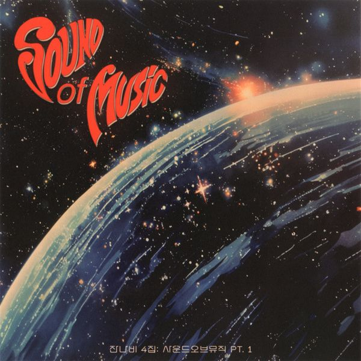

안녕하세요, 라보엠입니다.
오늘은 2025년 4월 28일 발매와 동시에 큰 화제를 모은 잔나비의 정규 4집 타이틀곡 사랑의 이름으로!’를 소개해드리겠습니다. 이번 곡은 잔나비 특유의 서정적인 감성에 에스파 카리나의 투명하고 단단한 보컬이 더해져, 예상치 못한 음악적 시너지를 선사하며 팬들의 마음을 단숨에 사로잡았습니다.
잔나비 - 사랑의 이름으로!
사랑의 이름으로! 뮤직비디오에는 넷플릭스 드라마 ‘폭싹 속았수다’의 배우 채서안이 출연해, 드라마틱한 스토리와 레트로풍 영상미를 선보입니다. 순간역을 배경으로 한 영상은 한 편의 단편 영화를 연상케 하며, 잔나비의 음악과 완벽한 조화를 이룹니다. 밤하늘과 테라스, 쏟아지는 사람들 속에서 사랑을 찾아가는 연인들의 모습이 따뜻하게 그려집니다.
이번 곡의 가장 큰 화제는 단연 에스파 카리나의 피처링입니다. 카리나의 투명하고 단단한 보컬은 잔나비의 빈티지하면서도 감성적인 사운드와 어우러져, 한층 더 풍성한 감정선을 만들어냅니다. 팬들은 “최정훈과 카리나의 보이스 합이 최고”, “초여름 로맨틱 판타지송”이라는 극찬을 보내고 있습니다. 두 아티스트가 전혀 다른 음악 세계를 지녔음에도, ‘사랑’이라는 키워드 아래 하나의 감정선으로 녹아들며 기대 이상의 시너지를 발산합니다.
잔나비 - 사랑의 이름으로! - 노래 가사
단순함이라는 거
우린 알 수 있을까
사랑은 먼 별에서 온 복잡한 일들만 같고
이 시대는 내겐 아직 어지러워
(어디든)
사랑을 찾아서
(빛바래진)
그 의미를 찾아서
(이 밤도)
쏟아지는 사람들 사람들
이곳은
답을 쫓는 연인들의
밤하늘과 테라스
사랑의 이름으로-
To You
단순함이라는 건
진리의 가장 앳된 얼굴
굴하지 않는 미소는 우리의 자랑이니까
다정함이 깃들기를
어디든
사랑을 찾아서
(빛바래진)
그 의미를 찾아서
(이 밤도)
쏟아지는 사람들 사람들
이곳은
답을 쫓는 연인들의
밤하늘과 테라스
사랑의 이름으로-
(잊지 마)
찾아온 사랑과
(눈 감으면)
그를 둘러싼 어둠과
(그 위로)
발재간을 부리던 작은 춤
그러다
나는 너를 사랑하고
너도 날 사랑하는
“이 시절을 기억해! 그리 길진 못할 거야!”
사랑의 이름으로!
To You
사랑의 이름으로!는 초여름 밤의 설렘과 연인들의 고민, 그리고 사랑을 찾아가는 여정을 담아낸 곡입니다. “단순함이라는 건 진리의 가장 앳된 얼굴”, “사랑은 먼 별에서 온 복잡한 일들만 같고, 이 시대는 내겐 아직 어지러워”라는 가사는 사랑의 본질을 탐구하며, 복잡한 세상 속에서도 결국 사랑이 우리 삶의 중심임을 이야기합니다. 잔나비의 따스한 사운드 위에 카리나의 맑은 음색이 더해져, 곡 전체에 신비롭고 따뜻한 분위기를 선사합니다.
특히 “굴하지 않는 미소는 우리의 자랑이니까, 다정함이 깃들기를”이라는 후렴구는, 힘든 세상 속에서도 서로를 향한 다정함과 희망을 잃지 말자는 위로의 메시지를 전합니다. 이 곡은 사랑이란 이름으로 서로를 보듬고, 소중한 순간을 지켜내자는 잔나비만의 낭만적 시선을 담고 있습니다.
정규 4집 ‘사운드 오브 뮤직 pt.1’과 ‘사랑의 이름으로!’

잔나비는 이번 앨범에서 과거의 향수를 현대적으로 재해석하는 ‘사운드 콜라주’ 기법을 통해, 감정과 낭만, 환상과 현실 사이를 넘나드는 음악적 서사를 완성했습니다. 타이틀곡 사랑의 이름으로!는 “음악은 환상이 아닌 현실”이라는 메시지를 중심에 두고, 순간의 감정과 삶을 정직하게 직면하는 경험을 노래합니다. 발매 직후 실시간 차트 상위권에 오르며 뜨거운 반응을 얻고 있습니다.
앨범 수록곡과 공연 소식
이번 4집 ‘사운드 오브 뮤직 pt.1’에는 ‘사랑의 이름으로!’를 비롯해 ‘뮤직’, ‘플래시(FLASH)’, ‘아윌다이포유♥X3’, ‘옥상에서 혼자 노을을 봤음’ 등 총 8곡이 수록되어 있습니다. 잔나비는 신보 발매를 기념해 서울 잠실실내체육관에서 단독 콘서트 ‘모든 소년소녀들 2025’를 개최하며 팬들과 만날 예정입니다.
[콘서트] 2025 잔나비 콘서트 <모든소년소녀들> 서울 1차/2차 티켓팅 안내 티켓팅 예매 일정 정보
그룹사운드 잔나비 콘서트 <모든소년소녀들> 2025 - 서울 THE 1ST/2ND WEEK 티켓오픈 안내입니다.
www.luck-d.com
이런 분들께 추천드려요
- 초여름 밤의 설렘과 낭만을 음악으로 느끼고 싶은 분
- 잔나비 특유의 서정적인 감성과 에스파 카리나의 맑은 보컬을 모두 사랑하는 분
- 사랑의 의미와 본질에 대해 다시 한 번 생각해보고 싶은 분
맺음말
잔나비와 카리나가 함께한 사랑의 이름으로!는 복잡한 세상 속에서도 사랑이 주는 단순한 진리와 다정함을 노래합니다. 따뜻한 사운드와 위로의 메시지, 그리고 두 아티스트의 아름다운 하모니가 어우러진 이 곡과 함께, 여러분도 올 초여름 사랑의 설렘을 다시 한 번 느껴보시길 바랍니다.